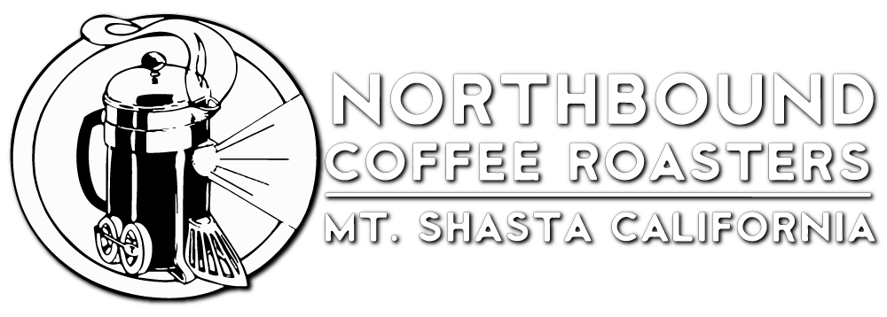
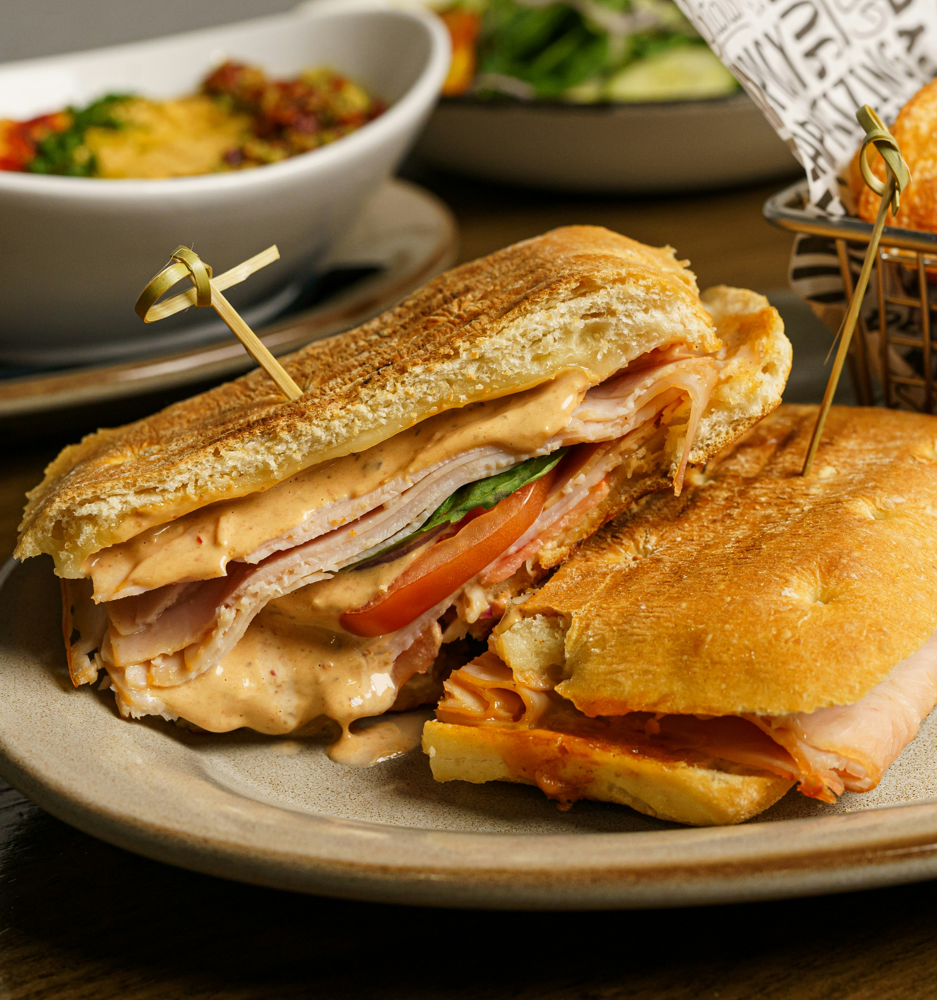
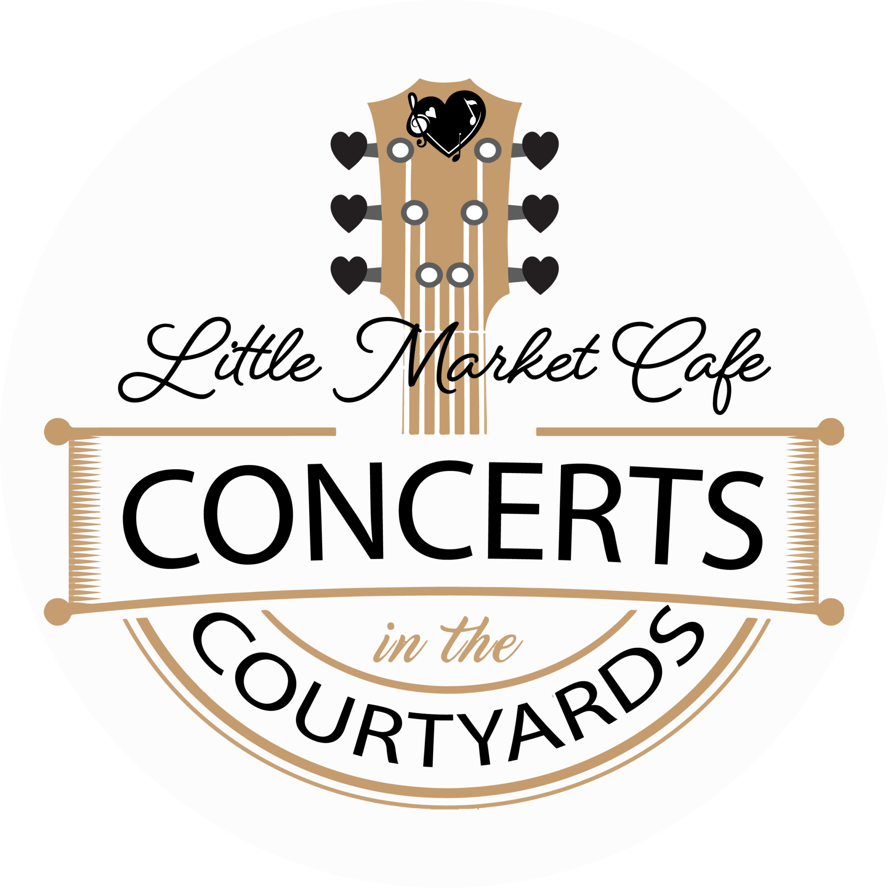

Our coffee
30 years ago a bond was formed between the owners of Northbound Coffee Roasters and the owner of the Little Market Cafe. Neither were in the coffee business back then. They were in the traveling music festival business, selling their jewelry & clothing at concerts around the country.
Little did either know they would be working together again three decades later. With the help of the internet the two were reunited only to find out they had both settled in small towns near historic railroad stations but at opposite sides of America!
Northbound Coffee is roasted in small (tiny, really) batches in their vintage roaster at the base of Mount Shasta in beautiful Northern California.
They only roast to order, as they believe that the freshest coffee is the best coffee.

SPRING / SUMMER HOURS*
Mon - CLOSED
Tue, Wed, Thur - 9am - 4pm
Fri & Sat - 9am - 8pm
Sun - 9am - 4pm
Taste the difference in our food

It starts by selecting the right produce, the best ingredients, and cleanest labels, but there’s something more that makes Little Market's food better. It’s a mix of chef-driven vision, passion for bringing the best to our customers, and a focus on amazing variety for every diet.
Our kitchen team takes pride in all the little details that lead to an extraordinary meal, every time. We know you will love our food as much as we do.
What's happening at the Cafe
We’re not just about yummy coffee drinks and delicious fresh food, the Concerts on the Courtyard’s playlist is pretty awesome too. Live jazz, big band, bluegrass, folk, rockabilly, classic rock and more can be heard throughout the year. Join us Friday and Saturday evenings, and Saturday and Sunday afternoons.
Join us weekly for a true showcase of free local music on the Courtyard at Tonge Row!

NEXT UP:
-
CUPPA T JONES
Saturday, Sep 26, 6 - 8 pm - Cole Larravide
Friday, Oct 02, 6 - 8 pm - EC Jazz Collective
Sunday, Oct 04, 12 - 3 pm